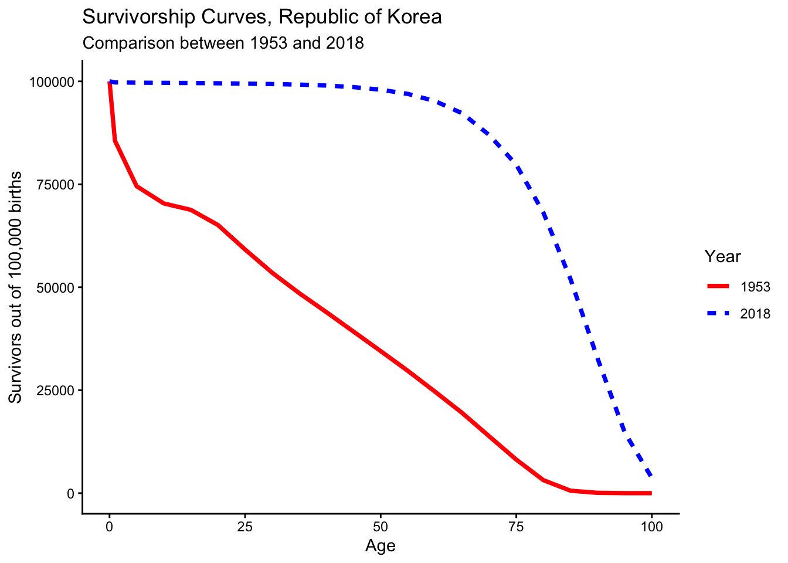
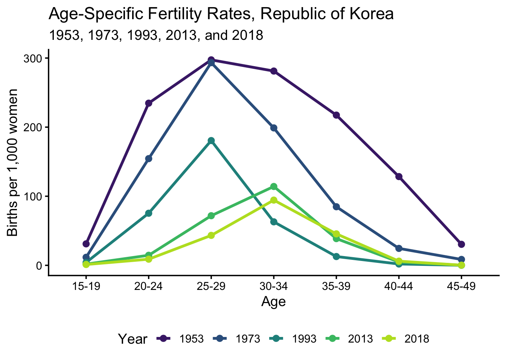

install.packages("DemoTools")Week 2. Comtemporary Mortality and Fertility Transition
Part 1: Lecture Slide
You can download the lecture slide here: Week2_Lecture_Slide
And recap exercise: Week2_Exercise
Part 2: Practice: Mortality and Fertility
1. Objectives
By the end of this lecture, students will be able to:
1. Caculate and compare Crude death rate and Age-standardized mortality rates.
2. Understand changes in survival curve.
3. Calculate and compare changes in Age-specific fertility rates
2. Install and Load packages
If you are running this code for the first time, install the required packages.
We now load the required packages for data wrangling, visualization, and animation.
library(dplyr)
library(ggplot2)
library(DemoTools)
library(wpp2024)
library(tidyr)3. Load WPP 2024 population and mortality data
The `wpp2024` package contains population, fertility, mortality, and projection datasets from the UN World Population Prospects 2024.
data(mx1dt)
data(mx5dt)
data(popAge1dt)4. Age-specific mortality and population (Japan vs Uganda, 2018)
This section compares mortality between Japan and Uganda using age-specific mortality rates and population data.
jap_mx <- mx1dt %>%
filter(name == "Japan", year == 2018) %>%
select(age, mxB)
uga_mx <- mx1dt %>%
filter(name == "Uganda", year == 2018) %>%
select(age, mxB)
jap_pop <- popAge1dt %>%
filter(name == "Japan", year == 2018) %>%
select(age, pop)
uga_pop <- popAge1dt %>%
filter(name == "Uganda", year == 2018) %>%
select(age, pop)we first calculate ‘Crude Death Rate’.
jap_cdr <- jap_pop %>%
left_join(jap_mx, by = "age") %>%
summarise(CDR = sum(pop * mxB) / sum(pop) * 1000) %>%
pull(CDR)
uga_cdr <- uga_pop %>%
left_join(uga_mx, by = "age") %>%
summarise(CDR = sum(pop * mxB) / sum(pop) * 1000) %>%
pull(CDR)The crude death rate shows the number of deaths per 1,000 population without adjusting for age structure.
5. Direct age standardization
std_pop <- jap_pop %>%
rename(pop_jap = pop) %>%
left_join(uga_pop %>% rename(pop_uga = pop), by = "age") %>%
mutate(std_pop = (pop_jap + pop_uga) / 2) %>%
select(age, std_pop)
jap_asmr <- std_pop %>%
left_join(jap_mx, by = "age") %>%
summarise(ASMR = sum(std_pop * mxB) / sum(std_pop) * 1000) %>%
pull(ASMR)
uga_asmr <- std_pop %>%
left_join(uga_mx, by = "age") %>%
summarise(ASMR = sum(std_pop * mxB) / sum(std_pop) * 1000) %>%
pull(ASMR)Age-standardized mortality removes the effect of different population age structures.
The below table shows how crude and age-standardized mortality rates can lead to different interpretations.
mortality_result <- tibble(
Country = c("Japan", "Uganda"),
`Crude Death Rate` = c(jap_cdr, uga_cdr),
`Age-standardized Mortality Rate` = c(jap_asmr, uga_asmr)
)
mortality_result# A tibble: 2 × 3
Country `Crude Death Rate` `Age-standardized Mortality Rate`
<chr> <dbl> <dbl>
1 Japan 11.3 8.74
2 Uganda 5.62 20.7 6. Survivorship curves: Republic of Korea, 1953 vs 2018
We first need to create time tables and the use lx to create survivoership curves. Survivorship curves show how many people remain alive at each age out of 100,000 births.
kor_mx_1953 <- mx5dt %>%
filter(name == "Republic of Korea", year == 1953) %>%
transmute(
Age = as.numeric(gsub("100\\+", "100", age)),
nMx = mxB
) %>%
arrange(Age)
kor_mx_2018 <- mx5dt %>%
filter(name == "Republic of Korea", year == 2018) %>%
transmute(
Age = as.numeric(gsub("100\\+", "100", age)),
nMx = mxB
) %>%
arrange(Age)
lt_kor_1953 <- lt_abridged(
nMx = kor_mx_1953$nMx,
Age = kor_mx_1953$Age,
radix = 100000
) %>%
mutate(year = "1953")
lt_kor_2018 <- lt_abridged(
nMx = kor_mx_2018$nMx,
Age = kor_mx_2018$Age,
radix = 100000
) %>%
mutate(year = "2018")
lt_kor_both <- bind_rows(lt_kor_1953, lt_kor_2018)We now plot survivorship curves
ggplot(
lt_kor_both,
aes(x = Age, y = lx, color = year, linetype = year)
) +
geom_line(linewidth = 1.3) +
scale_color_manual(
values = c("1953" = "red", "2018" = "blue")
) +
labs(
title = "Survivorship Curves, Republic of Korea",
subtitle = "Comparison between 1953 and 2018",
x = "Age",
y = "Survivors out of 100,000 births",
color = "Year",
linetype = "Year"
) +
theme_classic()
6. Fertility Transition in Korea
This section examines changes in age-specific fertility rates in the Republic of Korea. The results show how fertility shifted from a broad and high-fertility pattern to a delayed and low-fertility pattern.
data(percentASFR5dt)
data(tfr5dt)
kor_asfr <- percentASFR5dt %>%
filter(
name == "Republic of Korea",
year %in% c(1953, 1973, 1993, 2013, 2018)
) %>%
left_join(
tfr5dt %>%
select(name, year, tfr),
by = c("name", "year")
) %>%
mutate(
ASFR = tfr * pasfr / 500
)
kor_asfr country_code name year period age pasfr tfr
<int> <char> <num> <char> <char> <num> <num>
1: 410 Republic of Korea 1953 1950-1955 15-19 2.54591710 6.1031
2: 410 Republic of Korea 1953 1950-1955 20-24 19.22727455 6.1031
3: 410 Republic of Korea 1953 1950-1955 25-29 24.36309389 6.1031
4: 410 Republic of Korea 1953 1950-1955 30-34 23.03675032 6.1031
5: 410 Republic of Korea 1953 1950-1955 35-39 17.81276818 6.1031
6: 410 Republic of Korea 1953 1950-1955 40-44 10.52297649 6.1031
7: 410 Republic of Korea 1953 1950-1955 45-49 2.49121947 6.1031
8: 410 Republic of Korea 1973 1970-1975 15-19 1.49895648 3.8807
9: 410 Republic of Korea 1973 1970-1975 20-24 19.89744395 3.8807
10: 410 Republic of Korea 1973 1970-1975 25-29 37.79405411 3.8807
11: 410 Republic of Korea 1973 1970-1975 30-34 25.62719414 3.8807
12: 410 Republic of Korea 1973 1970-1975 35-39 10.92568258 3.8807
13: 410 Republic of Korea 1973 1970-1975 40-44 3.15746942 3.8807
14: 410 Republic of Korea 1973 1970-1975 45-49 1.09919932 3.8807
15: 410 Republic of Korea 1993 1990-1995 15-19 1.24110680 1.6894
16: 410 Republic of Korea 1993 1990-1995 20-24 22.31188925 1.6894
17: 410 Republic of Korea 1993 1990-1995 25-29 53.44378876 1.6894
18: 410 Republic of Korea 1993 1990-1995 30-34 18.63062457 1.6894
19: 410 Republic of Korea 1993 1990-1995 35-39 3.76547004 1.6894
20: 410 Republic of Korea 1993 1990-1995 40-44 0.56849303 1.6894
21: 410 Republic of Korea 1993 1990-1995 45-49 0.03862756 1.6894
22: 410 Republic of Korea 2013 2010-2015 15-19 0.71894426 1.2297
23: 410 Republic of Korea 2013 2010-2015 20-24 5.91723809 1.2297
24: 410 Republic of Korea 2013 2010-2015 25-29 29.19761920 1.2297
25: 410 Republic of Korea 2013 2010-2015 30-34 46.40055297 1.2297
26: 410 Republic of Korea 2013 2010-2015 35-39 15.72285236 1.2297
27: 410 Republic of Korea 2013 2010-2015 40-44 1.96641236 1.2297
28: 410 Republic of Korea 2013 2010-2015 45-49 0.07638075 1.2297
29: 410 Republic of Korea 2018 2015-2020 15-19 0.60030636 0.9984
30: 410 Republic of Korea 2018 2015-2020 20-24 4.45292220 0.9984
31: 410 Republic of Korea 2018 2015-2020 25-29 21.70120017 0.9984
32: 410 Republic of Korea 2018 2015-2020 30-34 47.28063753 0.9984
33: 410 Republic of Korea 2018 2015-2020 35-39 22.81749752 0.9984
34: 410 Republic of Korea 2018 2015-2020 40-44 3.02536149 0.9984
35: 410 Republic of Korea 2018 2015-2020 45-49 0.12207473 0.9984
country_code name year period age pasfr tfr
<int> <char> <num> <char> <char> <num> <num>
ASFR
<num>
1: 0.0310759733
2: 0.2346919586
3: 0.2973807967
4: 0.2811911817
5: 0.2174262110
6: 0.1284455556
7: 0.0304083230
8: 0.0116340008
9: 0.1544320215
10: 0.2933347715
11: 0.1989029046
12: 0.0847985928
13: 0.0245063832
14: 0.0085313256
15: 0.0041934516
16: 0.0753874114
17: 0.1805758734
18: 0.0629491543
19: 0.0127227702
20: 0.0019208243
21: 0.0001305148
22: 0.0017681715
23: 0.0145528554
24: 0.0718086247
25: 0.1141175200
26: 0.0386687831
27: 0.0048361946
28: 0.0001878508
29: 0.0011986917
30: 0.0088915950
31: 0.0433329565
32: 0.0944099770
33: 0.0455619790
34: 0.0060410418
35: 0.0002437588
ASFR
<num>The percentage distribution of fertility by age is converted into age-specific fertility rates using the total fertility rate.
kor_asfr %>%
group_by(year) %>%
summarise(
TFR_check = 5 * sum(ASFR),
TFR_original = first(tfr)
)# A tibble: 5 × 3
year TFR_check TFR_original
<dbl> <dbl> <dbl>
1 1953 6.10 6.10
2 1973 3.88 3.88
3 1993 1.69 1.69
4 2013 1.23 1.23
5 2018 0.998 0.998This check confirms that the calculated age-specific fertility rates reproduce the original total fertility rate.
The percentage distribution of fertility by age is converted into age-specific fertility rates using the total fertility rate.
kor_asfr_table <- kor_asfr %>%
mutate(
ASFR = round(ASFR * 1000, 1)
) %>%
select(year, age, ASFR) %>%
tidyr::pivot_wider(
names_from = age,
values_from = ASFR
) %>%
arrange(year)
kor_asfr_table# A tibble: 5 × 8
year `15-19` `20-24` `25-29` `30-34` `35-39` `40-44` `45-49`
<dbl> <dbl> <dbl> <dbl> <dbl> <dbl> <dbl> <dbl>
1 1953 31.1 235. 297. 281. 217. 128. 30.4
2 1973 11.6 154. 293. 199. 84.8 24.5 8.5
3 1993 4.2 75.4 181. 62.9 12.7 1.9 0.1
4 2013 1.8 14.6 71.8 114. 38.7 4.8 0.2
5 2018 1.2 8.9 43.3 94.4 45.6 6 0.2The table shows age-specific fertility rates per 1,000 women.
fertility rate.
ggplot(
kor_asfr,
aes(
x = age,
y = ASFR * 1000,
color = factor(year),
group = year
)
) +
geom_line(linewidth = 1.3) +
geom_point(size = 2.5) +
scale_color_viridis_d(
option = "viridis",
begin = 0.1,
end = 0.9
) +
labs(
title = "Age-Specific Fertility Rates, Republic of Korea",
subtitle = "1953, 1973, 1993, 2013, and 2018",
x = "Age",
y = "Births per 1,000 women",
color = "Year"
) +
theme_classic(base_size = 14) +
theme(
legend.position = "bottom"
)
The fertility schedule became much lower and shifted toward older ages over time.
This reflects Korea’s rapid fertility transition and delayed childbearing.